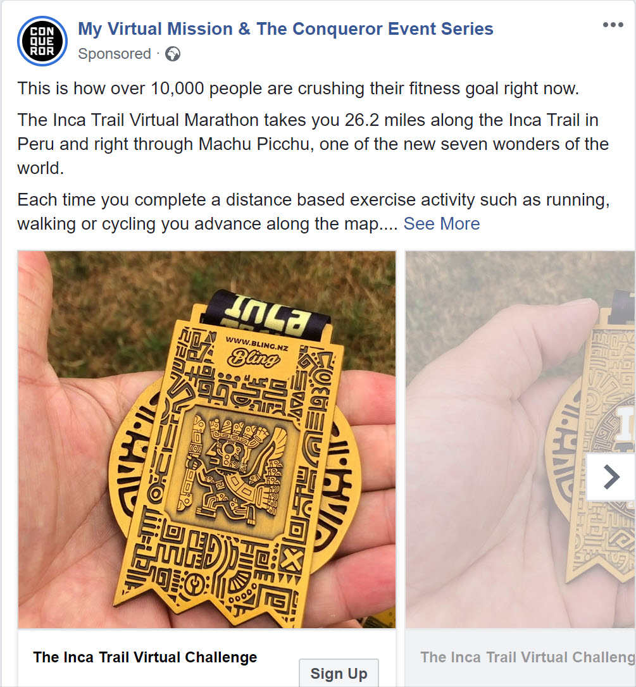
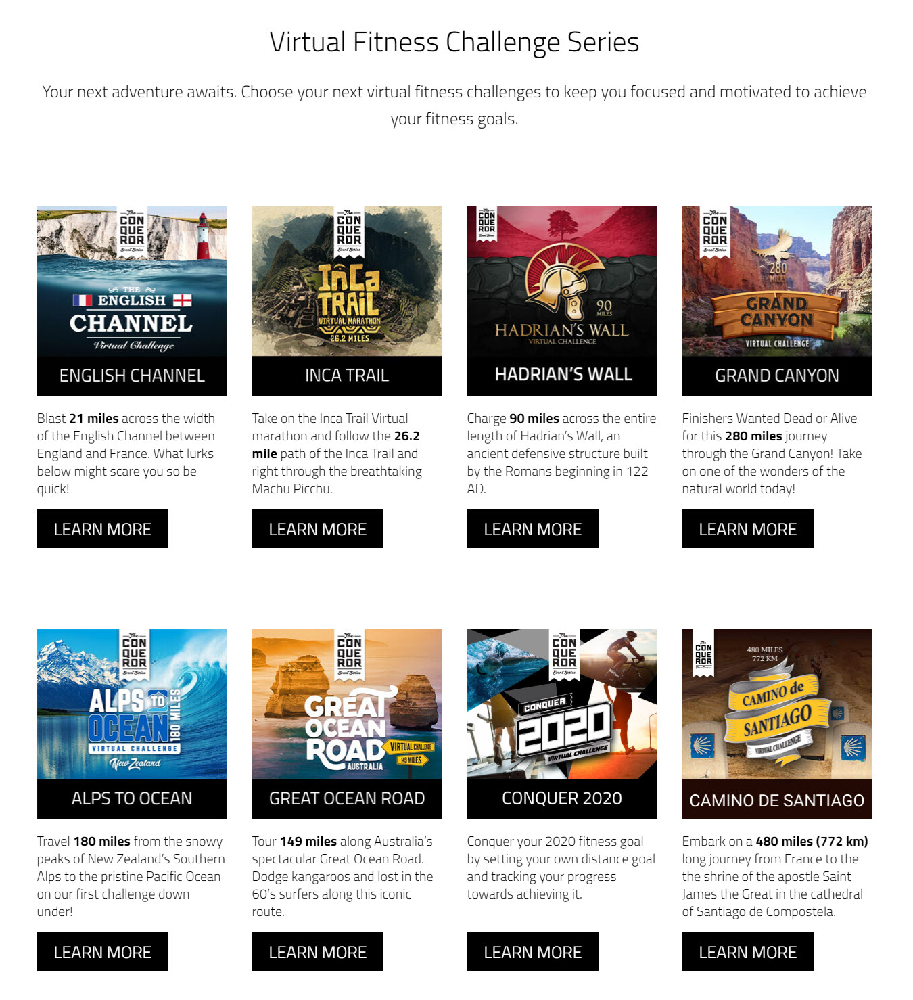
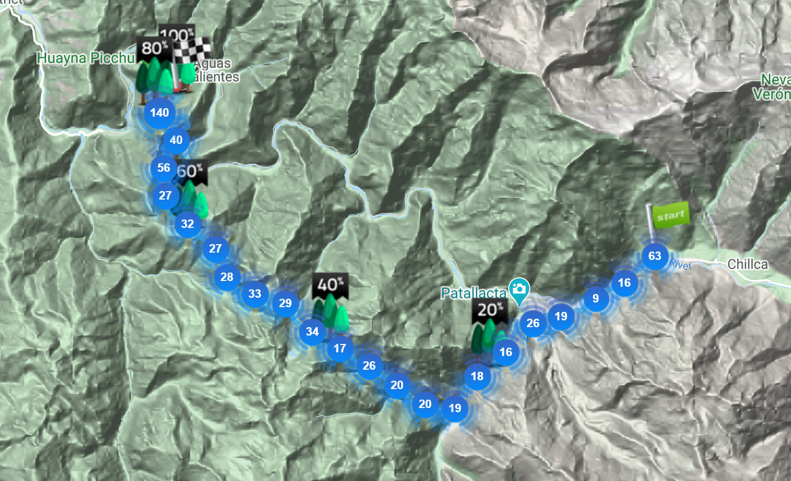
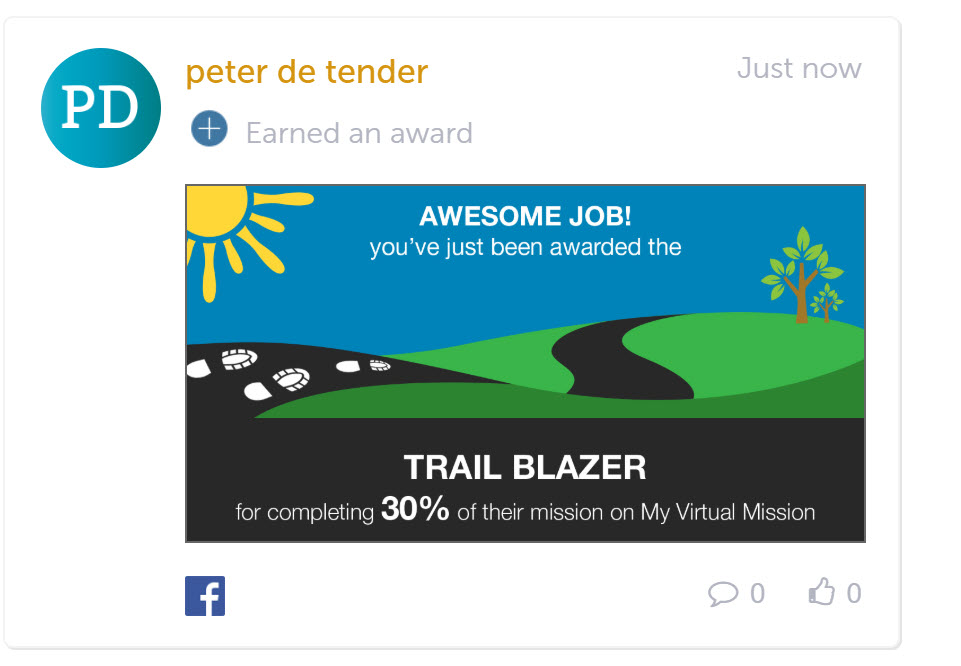
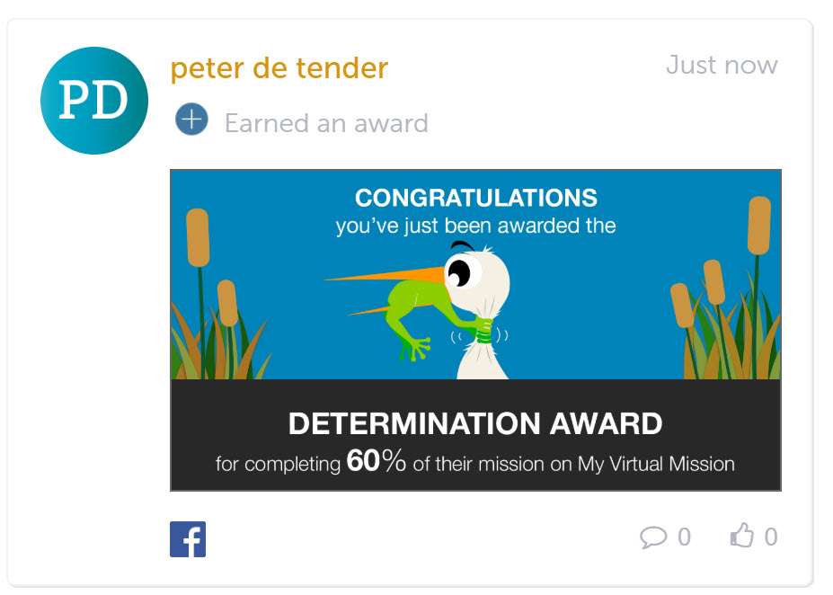
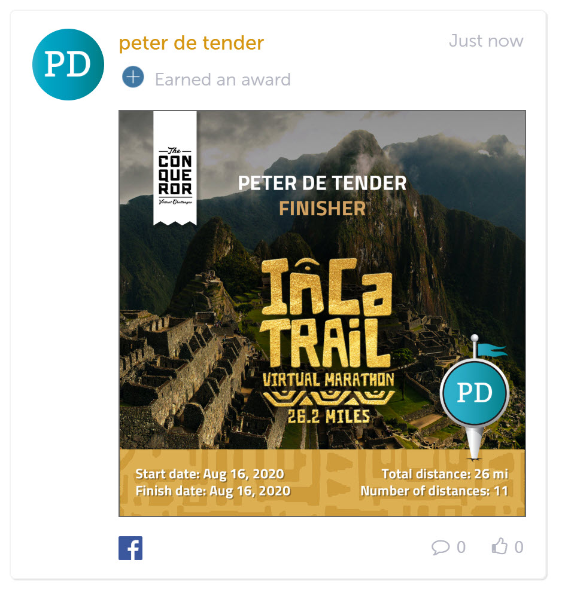

Hi there,
If you wonder why it’s been a bit quite on the blog front, it’s because I enjoyed 2 weeks off from work, distracting a bit from Azure, technology and spending some needed family time. Bonus was that these 2 weeks probably had the nicest weather of the whole year (although my wife would argue on that, since she is more into snow and cold, not the humid hot sweaty weather we had).
I spent my days reading books (yes, tech related, more on that in future blog posts…), watching videos, catching up on archived Tweet posts,… so the relaxing life you could say. We managed to book a last-minute trip to Canary Wharf, London for a couple of days, so that helped in having a good time as well. And that’s where I actually found me another challenge, walking… yes, walking. You might think what’s the big deal about that, but knowing I’m delivering Azure workshops 4 or 5 days a week for the last few years, it means I sit at my desk about 10 hours a day. Next to that, I used to enjoy walking from my hotel room to the customer’s office to deliver training (where possible), but due to COVID19 and the whole work from home, the only walking I’m doing is going up and down the (22) stairs; so you can’t really say I’ve been exercising a lot.
The Conqueror
Back to my London walking… the process actually started earlier, where I discovered “The Conqueror”, out of a Facebook advertisement.

They offer a virtual journey, stimulating people to walk (or run, or bicycle,… doing distance activity basically), almost like hiking or taking a trail passage. Along the trip, you get virtual postcards by email, and when completing the journey, you receive a certificate to print and a metal medal with a cool design.

My Virtual Mission
So a few weeks, I already tried to push myself into walking a bit more as part of my Work from Home story, but I have to admit, although I activated my first “challenge”, I didn’t do much walking :(.
However, for some reason, and without “pushing” myself, we did

In between each progress, they provide you some media gadgets to share on social media, showing how you are doing (I’m not that social media minded to share it though…or at least not yet, maybe in the future when I keep going…)


and eventually one that shows the completion certificate upon finishing

That’s how I managed to complete 2 challenges, “English Channel - 21 miles”
and “The Inca Trail - 26,2 miles”
What’s next
Personally, my biggest challenge now lies ahead of me, with the usual work stream starting again tomorrow for the next following weeks. I need to push myself and do a “daily walk”. Reaching my 1-3 miles as a start, maybe moving up to some longer walks before the training day starts, or when the training day is finished. Mixing this with enough family-time and other things to look after might be though in the beginning. Luckily I got my family to support me in this, as they know I want to succeed in this.
If my story inspired you to join a similar challenge, let me know when you signed up and we can influence each other from a virtual team. For now, I’m going to enjoy my little victory, dreaming of longer walks in the near future.
Cheers, Peter